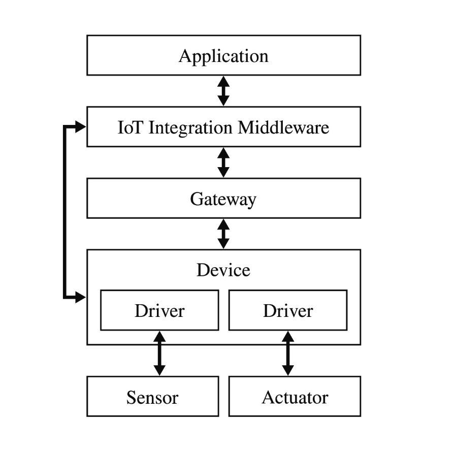

Problemas del IoT
El internet de las cosas se puede dividir en tres capas principales:
-
Aplicación
-
Red
-
Dispositivos
Una versión extendida de este esquema se puede observar en la siguiente figura, en donde se muestra que los dispositivos en un sistema de IoT están compuestos de sensores y actuadores, así como también se descompone la capa de red en 2, una gateway que le permite a un dispositivo de IoT enviar sus datos a través de internet, y una capa de integración de IoT, que recibe los datos de los múltiples dispositivos de IoT para luego enviarlos a la aplicación.
En la capa de dispositivos, tenemos que estos están compuestos de sensores, los cuales les permiten a los dispositivos de IoT realizar mediciones sobre fenómenos en el mundo real. Ejemplos de sensores pueden ser acelerómetros, giroscopios, magnetómetros, LiDAR, sensores de movimiento, etc. Mientras que los actuadores le permiten al dispositivo de IoT realizar acciones en el mundo real. Ejemplos de actuadores pueden ser los mecanismos que permiten a un aire acondicionado cambiar la temperatura de una habitación, o que permiten a una televisión colocar un video en ella. Estos son dispositivos por lo general pequeños que tienen poco poder de procesamiento, muchas veces ni siquiera tienen un sistema operativo.
La capa de red es la que, a través de protocolos de red, es capaz de enviar datos entre dispositivos. En IoT, permite enviar las mediciones de los sensores y enviar instrucciones a los actuadores desde otros dispositivos. Para ello se requieren protocolos como el ya mencionado 6LoWPAN.
Finalmente, la capa de aplicación es la que consume y procesa los datos recolectados por los múltiples sensores. Esta capa puede tener diferentes implementaciones como por ejemplo un programa que muestre gráficos de los datos que se reciben, o un programa que realice acciones con base en las mediciones de los sensores Dominguez et al. (2022).